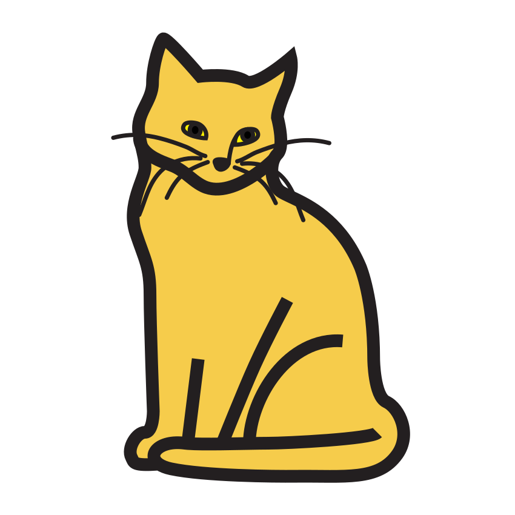
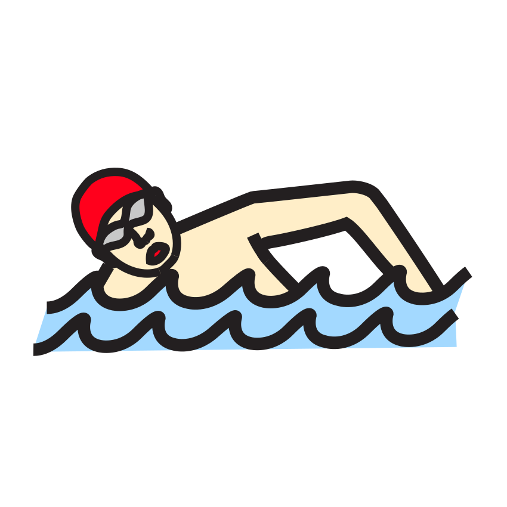
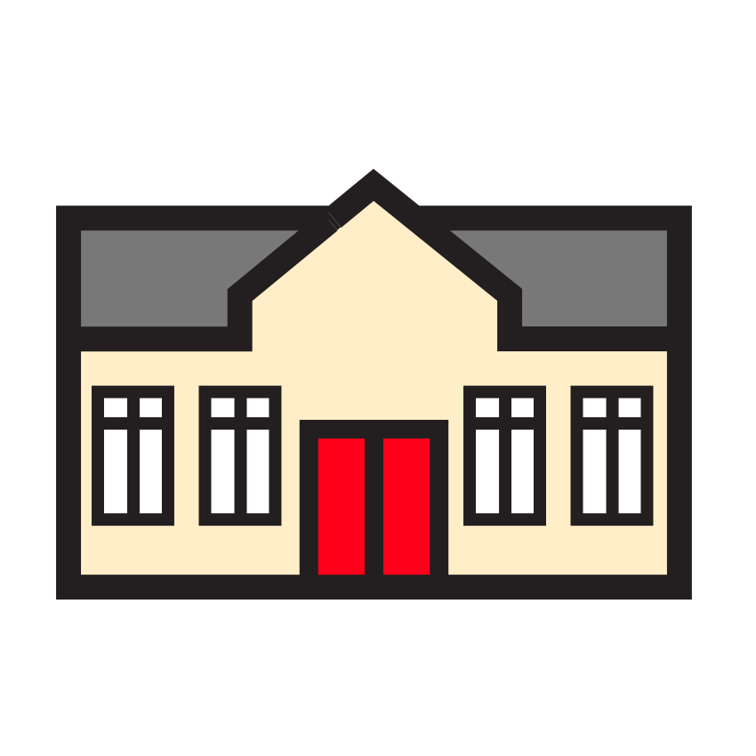
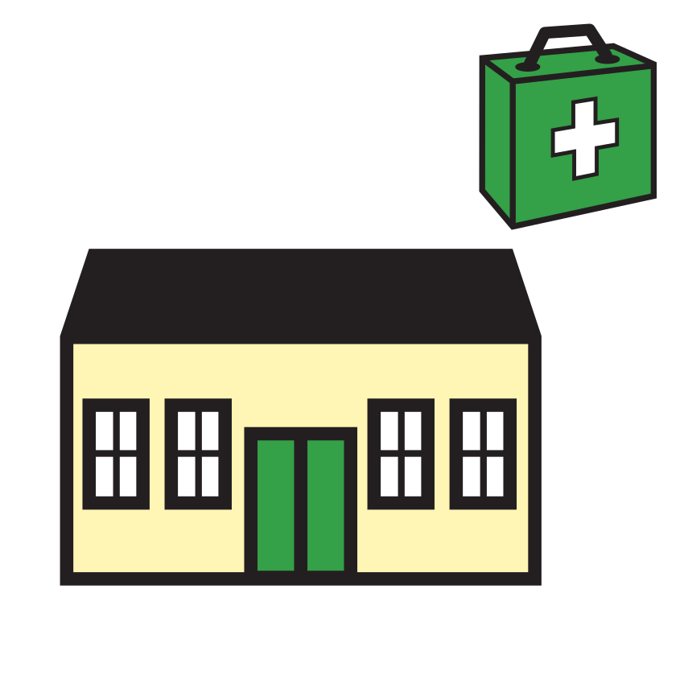
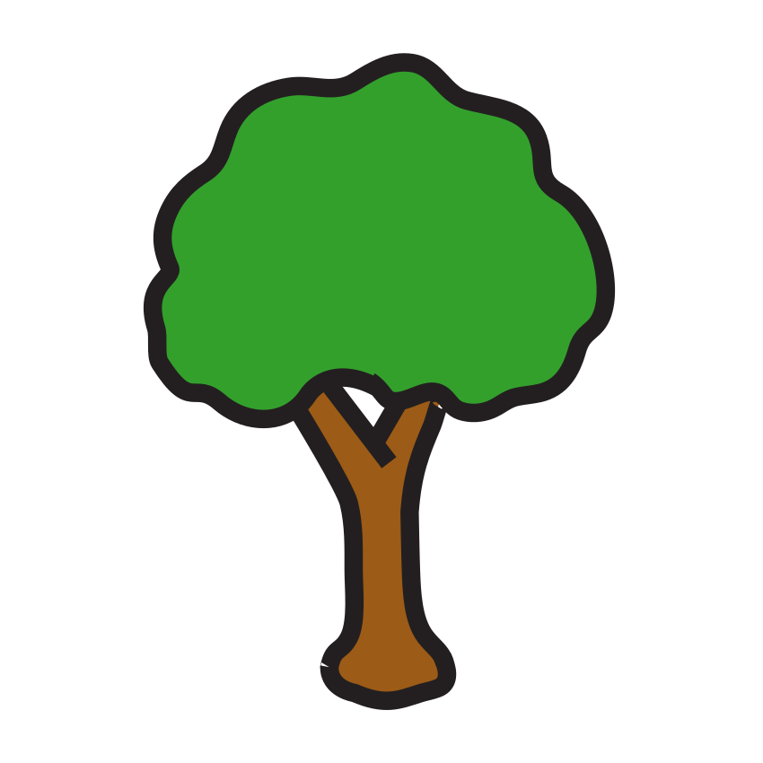
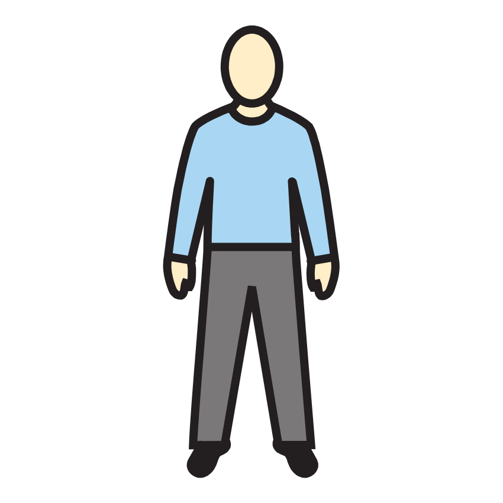

Sous-objectif : classer des mots selon leur nombre de syllabes (prépare la fiche d’évaluation 1.3).
Consigne :1. Frappe les syllabes et relie chaque image à son étage : 1 syllabe → 1er étage, 2 syllabes → 2e étage, 3 syllabes → 3e étage. 2. Frappe chaque mot et dessine un rond par syllabe dans la case. 3. Entoure seulement les images de 2 syllabes.
1
bus
pigeon
escargot
feu
magasin
vélo
3e étage : ●●●
2e étage : ●●
1er étage : ●
2
moto
hélicoptère
cinéma

chat
3

★ Défi : trouve toi-même un mot de la ville qui a 3 syllabes et dessine-le :
Compétence : scander et dénombrer les syllabes.Seul ☐ · Avec aide ☐ · À revoir ☐
Prénom : Date :
Période 1 · Entraînement A2
Lettres — reconstitution de mots
Je reconstruis le mot VILLE ★ je m’entraîne
Sous-objectif : reconnaître les lettres et respecter leur ordre pour composer un mot (prépare la fiche d’évaluation 1.4).
Consigne :1. Découpe les grandes lettres en bas de la feuille et colle-les dans l’ordre pour écrire VILLE, comme le modèle. 2. Fais pareil avec ton prénom (lettres données par la maîtresse). 3. Dans la bande, entoure toutes les lettres du mot VILLE.
Compétence : composer un mot en respectant l’ordre des lettres.Seul ☐ · Avec aide ☐ · À revoir ☐
Prénom : Date :
Période 1 · Entraînement A3
Graphisme — écriture capitale
Les façades de la ville ★ je m’entraîne
Sous-objectif : tracés verticaux/horizontaux maîtrisés et copie soignée en capitales (prépare la fiche d’évaluation 1.5).
Consigne :1. Termine le quadrillage des fenêtres de chaque immeuble. 2. Copie les mots en capitales. 3. Repasse puis écris les chiffres. 4. Continue chaque bande jusqu’au bout : les barrières, les créneaux du château, les roues.
1
2
RUE
BUS
TAXI
31 2 3
4
Compétences : motricité fine ; copie en capitales ; écriture des chiffres 1 à 3 ; motifs graphiques.Seul ☐ · Avec aide ☐ · À revoir ☐
Prénom : Date :
Période 1 · Entraînement A4
Mathématiques — quantités
Autant que… ★ je m’entraîne
Sous-objectif : constituer une collection de même quantité et lire les constellations (prépare la fiche d’évaluation 1.7).
Consigne :1. Dessine dans la case vide autant de ronds qu’il y a d’animaux. 2. Relie chaque constellation au chiffre. 3. Colorie exactement autant d’images que le nombre écrit au début de la ligne.
1
2
5
4
6
3
3
5
2
6
★ Défi : dessine 7 fenêtres sur l’immeuble :
Compétences : constituer une collection ; associer constellations et chiffres jusqu’à 6.Seul ☐ · Avec aide ☐ · À revoir ☐
Prénom : Date :
Période 1 · Entraînement A5
Mathématiques — formes planes
La maison des formes ★ je m’entraîne
Sous-objectif : reconnaître les 4 formes dans un dessin (prépare la fiche d’évaluation 1.9).
Consigne :1. Dans la maison : colorie les carrés en rouge, le triangle en vert, les rectangles en bleu, les disques en jaune. 2. Compte chaque forme et écris le nombre. 3. Dessine les formes demandées dans les cases.
2
carrés : rectangles : disques : triangles :
3
un carré
un triangle
un rectangle
un disque
Compétences : reconnaître, dénombrer et tracer les formes planes.Seul ☐ · Avec aide ☐ · À revoir ☐
Prénom : Date :
Période 1 · Entraînement A6
Vocabulaire — catégoriser
Je range les mots de la ville ★ je m’entraîne
Sous-objectif : organiser le lexique en catégories (prépare la fiche d’évaluation 1.1).
Consigne :1. Barre l’intrus : ce qu’on ne voit pas dans notre ville. 2. Relie chaque image à sa famille : les animaux ou les bâtiments. 3. Relie chaque mot en capitales à son image.
1

2

les animaux
les bâtiments
3
BUS
MAISON
VÉLO
CHAT
★ Défi : dessine un autre animal de la ville dans la marge et dis son nom à un camarade.
Compétences : catégoriser (« animal », « bâtiment ») ; reconnaître des mots familiers.Seul ☐ · Avec aide ☐ · À revoir ☐
Prénom : Date :
Période 1 · Entraînement B1
Phonologie — syllabes
J’entends la syllabe cachée ★★ je consolide
Sous-objectif : localiser une syllabe dans un mot (prépare la fiche d’évaluation 1.3, exercice 2).
Consigne :1. Entoure les images où tu entends « PI ». 2. Entoure les images où tu entends « MA » et fais une croix si tu l’entends au début du mot. 3. Dis le mot et entoure la syllabe que tu entends au DÉBUT.
1J’entends « PI » ?
pigeon
vélo
piscine

arbre
2J’entends « MA » ?
magasin
maison
cinéma
bus
3
VÉ
MO
LO
SI
PI
NE
GA
SIN
MA
MI
FOUR
LA
★ Défi : CINÉMA : la syllabe « MA » est-elle au début ou à la fin ? Colorie la bonne case : débutfin
Compétence : localiser une syllabe dans un mot.Seul ☐ · Avec aide ☐ · À revoir ☐
Prénom : Date :
Période 1 · Entraînement B2
Lettres — mots identiques
Le bon panneau ★★ je consolide
Sous-objectif : comparer des mots lettre à lettre, dans l’ordre (prépare la fiche d’évaluation 1.4).
Consigne :1. Entoure les panneaux où PARC est bien écrit, barre les pièges. 2. Découpe les lettres et reconstruis le mot MOTO dans les grandes cases. 3. Dans la grande bande, entoure le mot BUS chaque fois que tu le vois.
Compétences : discriminer visuellement des mots proches ; composer un mot.Seul ☐ · Avec aide ☐ · À revoir ☐
Prénom : Date :
Période 1 · Entraînement B3
Écriture — capitales de mémoire
J’écris de mémoire ★★ je consolide
Sous-objectif : écrire son prénom et des mots connus sans modèle sous les yeux (prépare la fiche d’évaluation 1.5).
Consigne :1. Regarde bien le mot, retourne la feuille-modèle, puis écris-le de mémoire. Vérifie avec le modèle et corrige. 2. Entoure toutes les lettres de ton prénom dans l’alphabet. 3. Écris les lettres que la maîtresse dicte.
1
Mon prénom (sans étiquette !) :
VILLE :
PARC :
2
A
B
C
D
E
F
G
H
I
J
K
L
M
N
O
P
Q
R
S
T
U
V
W
X
Y
Z
3
★ Défi : écris le prénom d’un copain ou d’une copine de la classe :
Compétence : mémoriser l’orthographe de mots familiers en capitales.Seul ☐ · Avec aide ☐ · À revoir ☐
Prénom : Date :
Période 1 · Entraînement B4
Mathématiques — décompositions
Toutes les façons de faire 5 et 6 ★★ je consolide
Sous-objectif : décomposer 5 et 6 de plusieurs façons (prépare la fiche d’évaluation 1.8).
Consigne :1. Complète chaque ligne pour faire 5 pigeons, puis écris les deux chiffres. 2. Trouve deux façons différentes de faire 6. 3. Dominos : dessine les points qui manquent pour faire le nombre écrit au-dessus.
1
Toit A
Toit B (je dessine)
Les chiffres
et
et
2Je dessine deux façons de faire 6 :
6
6
3
5
5
5
6
6
6
Compétence : composer et décomposer 5 et 6, verbaliser « … et … font … ».Seul ☐ · Avec aide ☐ · À revoir ☐
Prénom : Date :
Période 1 · Entraînement B5
Mathématiques — problèmes
Les petits problèmes du bus ★★ je consolide
Sous-objectif : résoudre des problèmes d’ajout et de retrait avec des dessins (vers les problèmes des périodes suivantes).
Consigne :1. 5 personnes sont dans le bus, 2 descendent : barre-les et écris combien il en reste. 2. 3 pigeons sont sur la place, 3 autres arrivent : dessine-les et écris le total. 3. Il y a 6 vélos et 4 casques : entoure un casque pour chaque vélo. Combien manque-t-il de casques ? 4. 4 voitures sont au parking, 2 arrivent : dessine-les et écris le total. 5. 6 fourmis sur le trottoir, 3 rentrent à la fourmilière : barre-les et écris le reste.
1

Il reste personnes.
2
En tout : pigeons.
3
Il manque casques.
4
En tout : voitures.
5
Il reste fourmis.
Compétence : résoudre des problèmes de parties-tout et de correspondance.Seul ☐ · Avec aide ☐ · À revoir ☐
Prénom : Date :
Période 1 · Entraînement B6
Mathématiques — motifs et espace
Guirlandes et chemins ★★ je consolide
Sous-objectif : prolonger des motifs plus complexes et suivre un code (prépare les fiches d’évaluation 1.10 et 2.10).
Consigne :1. Continue les guirlandes. 2. Suis le code des flèches et trace le chemin du pigeon jusqu’à son nid. 3. Regarde le quadrillage modèle : dessine chaque image au même endroit dans le quadrillage vide.
1
2Le code : → ↓ → → ↓
3
→
Compétences : motifs répétitifs ; décoder un déplacement ; se repérer dans un quadrillage.Seul ☐ · Avec aide ☐ · À revoir ☐
Crédits des images
Les illustrations de ce cahier sont des pictogrammes Mulberry Symbols (Paxtoncrafts Charitable Trust, licence CC BY-SA 4.0, mulberrysymbols.org) et des pictogrammes ARASAAC (auteur : Sergio Palao, propriété du Gouvernement d’Aragon, Espagne, licence CC BY-NC-SA, arasaac.org). Merci à leurs auteurs et autrices.
 bus
bus pigeon
pigeon escargot
escargot feu
feu magasin
magasin vélo
vélo
 moto
moto hélicoptère
hélicoptère cinéma
cinéma